Structural patterns are concerned with how classes and objects are composed to form larger structures. Structural class patterns use inheritance to compose interfaces or implementations. As a simple example, consider how multiple inheritance mixes two or more classes into one. The result is a class that combines the properties of its parent classes. This pattern is particularly useful for making independently developed class libraries work together. Another example is the class form of the Adapter (139) pattern. In general, an adapter makes one interface (the adaptee’s) conform to another, thereby providing a uniform abstraction of different interfaces. A class adapter accomplishes this by inheriting privately from an adaptee class. The adapter then expresses its interface in terms of the adaptee’s.
Rather than composing interfaces or implementations, structural object patterns describe ways to compose objects to realize new functionality. The added flexibility of object composition comes from the ability to change the composition at run-time, which is impossible with static class composition.
Composite (163) is an example of a structural object pattern. It describes how to build a class hierarchy made up of classes for two kinds of objects: primitive and composite. The composite objects let you compose primitive and other composite objects into arbitrarily complex structures. In the Proxy (207) pattern, a proxy acts as a convenient surrogate or placeholder for another object. A proxy can be used in many ways. It can act as a local representative for an object in a remote address space. It can represent a large object that should be loaded on demand. It might protect access to a sensitive object. Proxies provide a level of indirection to specific properties of objects. Hence they can restrict, enhance, or alter these properties.
The Flyweight (195) pattern defines a structure for sharing objects. Objects are shared for at least two reasons: efficiency and consistency. Flyweight focuses on sharing for space efficiency. Applications that use lots of objects must pay careful attention to the cost of each object. Substantial savings can be had by sharing objects instead of replicating them. But objects can be shared only if they don’t define context-dependent state. Flyweight objects have no such state. Any additional information they need to perform their task is passed to them when needed. With no context-dependent state, Flyweight objects may be shared freely.
Whereas Flyweight shows how to make lots of little objects, Facade (185) shows how to make a single object represent an entire subsystem. A facade is a representative for a set of objects. The facade carries out its responsibilities by forwarding messages to the objects it represents. The Bridge (151) pattern separates an object’s abstraction from its implementation so that you can vary them independently.
Decorator (175) describes how to add responsibilities to objects dynamically. Decorator is a structural pattern that composes objects recursively to allow an open-ended number of additional responsibilities. For example, a Decorator object containing a user interface component can add a decoration like a border or shadow to the component, or it can add functionality like scrolling and zooming. We can add two decorations simply by nesting one Decorator object within another, and so on for additional decorations. To accomplish this, each Decorator object must conform to the interface of its component and must forward messages to it. The Decorator can do its job (such as drawing a border around the component) either before or after forwarding a message.
Many structural patterns are related to some degree. We’ll discuss these relationships at the end of the chapter.
Convert the interface of a class into another interface clients expect. Adapter lets classes work together that couldn’t otherwise because of incompatible interfaces.
Wrapper
Sometimes a toolkit class that’s designed for reuse isn’t reusable only because its interface doesn’t match the domain-specific interface an application requires.
Consider for example a drawing editor that lets users draw and arrange graphical elements (lines, polygons, text, etc.) into pictures and diagrams. The drawing editor’s key abstraction is the graphical object, which has an editable shape and can draw itself. The interface for graphical objects is defined by an abstract class called Shape. The editor defines a subclass of Shape for each kind of graphical object: a LineShape class for lines, a PolygonShape class for polygons, and so forth.
Classes for elementary geometric shapes like LineShape and PolygonShape are rather easy to implement, because their drawing and editing capabilities are inherently limited. But a TextShape subclass that can display and edit text is considerably more difficult to implement, since even basic text editing involves complicated screen update and buffer management. Meanwhile, an off-the-shelf user interface toolkit might already provide a sophisticated TextView class for displaying and editing text. Ideally we’d like to reuse TextView to implement TextShape, but the toolkit wasn’t designed with Shape classes in mind. So we can’t use TextView and Shape objects interchangeably.
How can existing and unrelated classes like TextView work in an application that expects classes with a different and incompatible interface? We could change the TextView class so that it conforms to the Shape interface, but that isn’t an option unless we have the toolkit’s source code. Even if we did, it wouldn’t make sense to change TextView; the toolkit shouldn’t have to adopt domain-specific interfaces just to make one application work.
Instead, we could define TextShape so that it adapts the TextView interface to Shape’s. We can do this in one of two ways: (1) by inheriting Shape’s interface and TextView’s implementation or (2) by composing a TextView instance within a TextShape and implementing TextShape in terms of TextView’s interface. These two approaches correspond to the class and object versions of the Adapter pattern. We call TextShape an adapter.
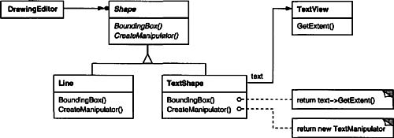
This diagram illustrates the object adapter case. It shows how BoundingBox requests, declared in class Shape, are converted to GetExtent requests defined in TextView. Since TextShape adapts TextView to the Shape interface, the drawing editor can reuse the otherwise incompatible TextView class.
Often the adapter is responsible for functionality the adapted class doesn’t provide. The diagram shows how an adapter can fulfill such responsibilities. The user should be able to “drag” every Shape object to a new location interactively, but TextView isn’t designed to do that. TextShape can add this missing functionality by implementing Shape’s CreateManipulator operation, which returns an instance of the appropriate Manipulator subclass.
Manipulator is an abstract class for objects that know how to animate a Shape in response to user input, like dragging the shape to a new location. There are subclasses of Manipulator for different shapes; TextManipulator, for example, is the corresponding subclass for TextShape. By returning a TextManipulator instance, TextShape adds the functionality that TextView lacks but Shape requires.
Use the Adapter pattern when
• you want to use an existing class, and its interface does not match the one you need.
• you want to create a reusable class that cooperates with unrelated or unforeseen classes, that is, classes that don’t necessarily have compatible interfaces.
• (object adapter only) you need to use several existing subclasses, but it’s impractical to adapt their interface by subclassing every one. An object adapter can adapt the interface of its parent class.
A class adapter uses multiple inheritance to adapt one interface to another:
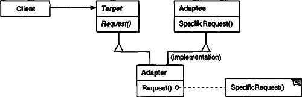
An object adapter relies on object composition:
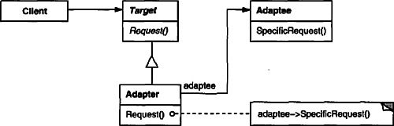
• Target (Shape)
– defines the domain-specific interface that Client uses.
• Client (DrawingEditor)
– collaborates with objects conforming to the Target interface.
• Adaptee (TextView)
– defines an existing interface that needs adapting.
• Adapter (TextShape)
– adapts the interface of Adaptee to the Target interface.
• Clients call operations on an Adapter instance. In turn, the adapter calls Adaptee operations that carry out the request.
Class and object adapters have different trade-offs. A class adapter
• adapts Adaptee to Target by committing to a concrete Adaptee class. As a consequence, a class adapter won’t work when we want to adapt a class and all its subclasses.
• lets Adapter override some of Adaptee’s behavior, since Adapter is a subclass of Adaptee.
• introduces only one object, and no additional pointer indirection is needed to get to the adaptee.
An object adapter
• lets a single Adapter work with many Adaptees—that is, the Adaptee itself and all of its subclasses (if any). The Adapter can also add functionality to all Adaptees at once.
• makes it harder to override Adaptee behavior. It will require subclassing Adaptee and making Adapter refer to the subclass rather than the Adaptee itself.
Here are other issues to consider when using the Adapter pattern:
1. How much adapting does Adapter do? Adapters vary in the amount of work they do to adapt Adaptee to the Target interface. There is a spectrum of possible work, from simple interface conversion—for example, changing the names of operations—to supporting an entirely different set of operations. The amount of work Adapter does depends on how similar the Target interface is to Adaptee’s.
2. Pluggable adapters. A class is more reusable when you minimize the assumptions other classes must make to use it. By building interface adaptation into a class, you eliminate the assumption that other classes see the same interface. Put another way, interface adaptation lets us incorporate our class into existing systems that might expect different interfaces to the class. Object-Works\Smalltalk [Par90] uses the term pluggable adapter to describe classes with built-in interface adaptation.
Consider a TreeDisplay widget that can display tree structures graphically. If this were a special-purpose widget for use in just one application, then we might require the objects that it displays to have a specific interface; that is, all must descend from a Tree abstract class. But if we wanted to make TreeDisplay more reusable (say we wanted to make it part of a toolkit of useful widgets), then that requirement would be unreasonable. Applications will define their own classes for tree structures. They shouldn’t be forced to use our Tree abstract class. Different tree structures will have different interfaces.
In a directory hierarchy, for example, children might be accessed with a GetSubdirectories operation, whereas in an inheritance hierarchy, the corresponding operation might be called GetSubclasses. A reusable TreeDisplay widget must be able to display both kinds of hierarchies even if they use different interfaces. In other words, the TreeDisplay should have interface adaptation built into it.
We’ll look at different ways to build interface adaptation into classes in the Implementation section.
3. Using two-way adapters to provide transparency. A potential problem with adapters is that they aren’t transparent to all clients. An adapted object no longer conforms to the Adaptee interface, so it can’t be used as is wherever an Adaptee object can. Two-way adapters can provide such transparency. Specifically, they’re useful when two different clients need to view an object differently.
Consider the two-way adapter that integrates Unidraw, a graphical editor framework [VL90], and QOCA, a constraint-solving toolkit [HHMV92]. Both systems have classes that represent variables explicitly: Unidraw has State Variable, and QOCA has ConstraintVariable. To make Unidraw work with QOCA, ConstraintVariable must be adapted to State Variable; to let QOCA propagate solutions to Unidraw, State Variable must be adapted to ConstraintVariable.
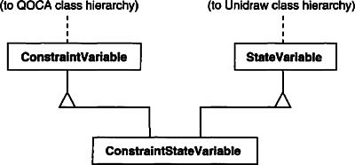
The solution involves a two-way class adapter ConstraintStateVariable, a subclass of both State Variable and ConstraintVariable, that adapts the two interfaces to each other. Multiple inheritance is a viable solution in this case because the interfaces of the adapted classes are substantially different. The two-way class adapter conforms to both of the adapted classes and can work in either system.
Although the implementation of Adapter is usually straightforward, here are some issues to keep in mind:
1. Implementing class adapters in C++. In a C++ implementation of a class adapter, Adapter would inherit publicly from Target and privately from Adaptee. Thus Adapter would be a subtype of Target but not of Adaptee.
2. Pluggable adapters. Let’s look at three ways to implement pluggable adapters for the TreeDisplay widget described earlier, which can lay out and display a hierarchical structure automatically.
The first step, which is common to all three of the implementations discussed here, is to find a “narrow” interface for Adaptee, that is, the smallest subset of operations that lets us do the adaptation. A narrow interface consisting of only a couple of operations is easier to adapt than an interface with dozens of operations. For TreeDisplay, the adaptee is any hierarchical structure. A minimalist interface might include two operations, one that defines how to present a node in the hierarchical structure graphically, and another that retrieves the node’s children.
The narrow interface leads to three implementation approaches:
(a) Using abstract operations. Define corresponding abstract operations for the narrow Adaptee interface in the TreeDisplay class. Subclasses must implement the abstract operations and adapt the hierarchically structured object. For example, a DirectoryTreeDisplay subclass will implement these operations by accessing the directory structure.
DirectoryTreeDisplay specializes the narrow interface so that it can display directory structures made up of FileSystemEntity objects.
(b) Using delegate objects. In this approach, TreeDisplay forwards requests for accessing the hierarchical structure to a delegate object. TreeDisplay can use a different adaptation strategy by substituting a different delegate.
For example, suppose there exists a DirectoryBrowser that uses a Tree-Display. DirectoryBrowser might make a good delegate for adapting TreeDisplay to the hierarchical directory structure. In dynamically typed languages like Smalltalk or Objective C, this approach only requires an interface for registering the delegate with the adapter. Then TreeDisplay simply forwards the requests to the delegate. NEXTSTEP [Add94] uses this approach heavily to reduce subclassing.
Statically typed languages like C++ require an explicit interface definition for the delegate. We can specify such an interface by putting the narrow interface that TreeDisplay requires into an abstract TreeAccessorDelegate class. Then we can mix this interface into the delegate of our choice—DirectoryBrowser in this case—using inheritance. We use single inheritance if the DirectoryBrowser has no existing parent class, multiple inheritance if it does. Mixing classes together like this is easier than introducing a new TreeDisplay subclass and implementing its operations individually.
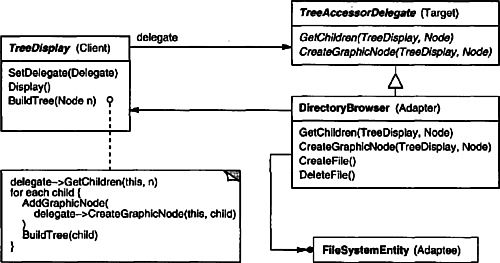
(c) Parameterized adapters. The usual way to support pluggable adapters in Smalltalk is to parameterize an adapter with one or more blocks. The block construct supports adaptation without subclassing. A block can adapt a request, and the adapter can store a block for each individual request. In our example, this means TreeDisplay stores one block for converting a node into a GraphicNode and another block for accessing a node’s children.
For example, to create TreeDisplay on a directory hierarchy, we write
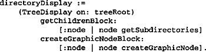
If you’re building interface adaptation into a class, this approach offers a convenient alternative to subclassing.
We’ll give a brief sketch of the implementation of class and object adapters for the Motivation example beginning with the classes Shape and TextView.
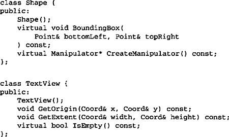
Shape assumes a bounding box defined by its opposing corners. In contrast, TextView is defined by an origin, height, and width. Shape also defines a CreateManipulator operation for creating a Manipulator object, which knows how to animate a shape when the user manipulates it.1 TextView has no equivalent operation. The class TextShape is an adapter between these different interfaces.
A class adapter uses multiple inheritance to adapt interfaces. The key to class adapters is to use one inheritance branch to inherit the interface and another branch to inherit the implementation. The usual way to make this distinction in C++ is to inherit the interface publicly and inherit the implementation privately. We’ll use this convention to define the TextShape adapter.
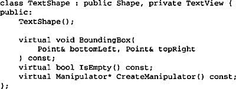
The BoundingBox operation converts TextView’s interface to conform to Shape’s.
The IsEmpty operation demonstrates the direct forwarding of requests common in adapter implementations:
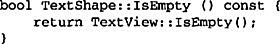
Finally, we define CreateManipulator (which isn’t supported by TextView) from scratch. Assume we’ve already implemented a TextManipulator class that supports manipulation of a TextShape.
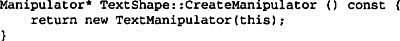
The object adapter uses object composition to combine classes with different interfaces. In this approach, the adapter TextShape maintains a pointer to TextView.
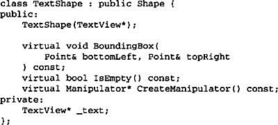
TextShape must initialize the pointer to the TextView instance, and it does so in the constructor. It must also call operations on its TextView object whenever its own operations are called. In this example, assume that the client creates the TextView object and passes it to the TextShape constructor:

CreateManipulator’s implementation doesn’t change from the class adapter version, since it’s implemented from scratch and doesn’t reuse any existing TextView functionality.
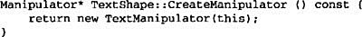
Compare this code to the class adapter case. The object adapter requires a little more effort to write, but it’s more flexible. For example, the object adapter version of TextShape will work equally well with subclasses of TextView—the client simply passes an instance of a TextView subclass to the TextShape constructor.
The Motivation example comes from ET++Draw, a drawing application based on ET++ [WGM88]. ET++Draw reuses the ET++ classes for text editing by using a TextShape adapter class.
Interviews 2.6 defines an Interactor abstract class for user interface elements such as scroll bars, buttons, and menus [VL88]. It also defines a Graphic abstract class for structured graphic objects such as lines, circles, polygons, and splines. Both Interactors and Graphics have graphical appearances, but they have different interfaces and implementations (they share no common parent class) and are therefore incompatible—you can’t embed a structured graphic object in, say, a dialog box directly.
Instead, Interviews 2.6 defines an object adapter called GraphicBlock, a subclass of Interactor that contains a Graphic instance. The GraphicBlock adapts the interface of the Graphic class to that of Interactor. The GraphicBlock lets a Graphic instance be displayed, scrolled, and zoomed within an Interactor structure.
Pluggable adapters are common in ObjectWorks\Smalltalk [Par90]. Standard Smalltalk defines a ValueModel class for views that display a single value. ValueModel defines a value, value: interface for accessing the value. These are abstract methods. Application writers access the value with more domain-specific names like width and width:, but they shouldn’t have to subclass ValueModel to adapt such application-specific names to the ValueModel interface.
Instead, ObjectWorks\Smalltalk includes a subclass of ValueModel called PluggableAdaptor. A PluggableAdaptor object adapts other objects to the ValueModel interface (value, value:). It can be parameterized with blocks for getting and setting the desired value. PluggableAdaptor uses these blocks internally to implement the value, value: interface. PluggableAdaptor also lets you pass in the selector names (e.g., width, width:) directly for syntactic convenience. It converts these selectors into the corresponding blocks automatically.
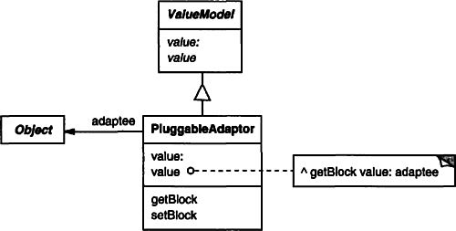
Another example from ObjectWorks\Smalltalk is the TableAdaptor class. A TableAdaptor can adapt a sequence of objects to a tabular presentation. The table displays one object per row. The client parameterizes TableAdaptor with the set of messages that a table can use to get the column values from an object.
Some classes in NeXT’s AppKit [Add94] use delegate objects to perform interface adaptation. An example is the NXBrowser class that can display hierarchical lists of data. NXBrowser uses a delegate object for accessing and adapting the data.
Meyer’s “Marriage of Convenience” [Mey88] is a form of class adapter. Meyer describes how a FixedStack class adapts the implementation of an Array class to the interface of a Stack class. The result is a stack containing a fixed number of entries.
Bridge (151) has a structure similar to an object adapter, but Bridge has a different intent: It is meant to separate an interface from its implementation so that they can be varied easily and independently. An adapter is meant to change the interface of an existing object.
Decorator (175) enhances another object without changing its interface. A decorator is thus more transparent to the application than an adapter is. As a consequence, Decorator supports recursive composition, which isn’t possible with pure adapters.
Proxy (207) defines a representative or surrogate for another object and does not change its interface.
Decouple an abstraction from its implementation so that the two can vary independently.
Handle/Body
When an abstraction can have one of several possible implementations, the usual way to accommodate them is to use inheritance. An abstract class defines the interface to the abstraction, and concrete subclasses implement it in different ways. But this approach isn’t always flexible enough. Inheritance binds an implementation to the abstraction permanently, which makes it difficult to modify, extend, and reuse abstractions and implementations independently.
Consider the implementation of a portable Window abstraction in a user interface toolkit. This abstraction should enable us to write applications that work on both the X Window System and IBM’s Presentation Manager (PM), for example. Using inheritance, we could define an abstract class Window and subclasses XWindow and PMWindow that implement the Window interface for the different platforms. But this approach has two drawbacks:
1. It’s inconvenient to extend the Window abstraction to cover different kinds of windows or new platforms. Imagine an IconWindow subclass of Window that specializes the Window abstraction for icons. To support Icon Windows for both platforms, we have to implement two new classes, XIconWindow and PMIconWindow. Worse, we’ll have to define two classes for every kind of window. Supporting a third platform requires yet another new Window subclass for every kind of window.
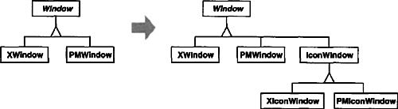
2. It makes client code platform-dependent. Whenever a client creates a window, it instantiates a concrete class that has a specific implementation. For example, creating an XWindow object binds the Window abstraction to the X Window implementation, which makes the client code dependent on the X Window implementation. This, in turn, makes it harder to port the client code to other platforms.
Clients should be able to create a window without committing to a concrete implementation. Only the window implementation should depend on the platform on which the application runs. Therefore client code should instantiate windows without mentioning specific platforms.
The Bridge pattern addresses these problems by putting the Window abstraction and its implementation in separate class hierarchies. There is one class hierarchy for window interfaces (Window, IconWindow, TransientWindow) and a separate hierarchy for platform-specific window implementations, with WindowImp as its root. The XWindowImp subclass, for example, provides an implementation based on the X Window System.
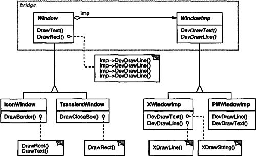
All operations on Window subclasses are implemented in terms of abstract operations from the WindowImp interface. This decouples the window abstractions from the various platform-specific implementations. We refer to the relationship between Window and WindowImp as a bridge, because it bridges the abstraction and its implementation, letting them vary independently.
Use the Bridge pattern when
• you want to avoid a permanent binding between an abstraction and its implementation. This might be the case, for example, when the implementation must be selected or switched at run-time.
• both the abstractions and their implementations should be extensible by subclassing. In this case, the Bridge pattern lets you combine the different abstractions and implementations and extend them independently.
• changes in the implementation of an abstraction should have no impact on clients; that is, their code should not have to be recompiled.
• (C++) you want to hide the implementation of an abstraction completely from clients. In C++ the representation of a class is visible in the class interface.
• you have a proliferation of classes as shown earlier in the first Motivation diagram. Such a class hierarchy indicates the need for splitting an object into two parts. Rumbaugh uses the term “nested generalizations” [RBP+91] to refer to such class hierarchies.
• you want to share an implementation among multiple objects (perhaps using reference counting), and this fact should be hidden from the client. A simple example is Coplien’s String class [Cop92], in which multiple objects can share the same string representation (StringRep).
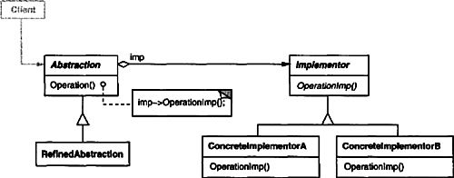
• Abstraction (Window)
– defines the abstraction’s interface.
– maintains a reference to an object of type Implementor.
• RefmedAbstraction (IconWindow)
– Extends the interface defined by Abstraction.
• Implementor (WindowImp)
– defines the interface for implementation classes. This interface doesn’t have to correspond exactly to Abstraction’s interface; in fact the two interfaces can be quite different. Typically the Implementor interface provides only primitive operations, and Abstraction defines higher-level operations based on these primitives.
• ConcreteImplementor (XWindowImp, PMWindowImp)
– implements the Implementor interface and defines its concrete implementation.
• Abstraction forwards client requests to its Implementor object.
The Bridge pattern has the following consequences:
1. Decoupling interface and implementation. An implementation is not bound permanently to an interface. The implementation of an abstraction can be configured at run-time. It’s even possible for an object to change its implementation at run-time.
Decoupling Abstraction and Implementor also eliminates compile-time dependencies on the implementation. Changing an implementation class doesn’t require recompiling the Abstraction class and its clients. This property is essential when you must ensure binary compatibility between different versions of a class library.
Furthermore, this decoupling encourages layering that can lead to a better-structured system. The high-level part of a system only has to know about Abstraction and Implementor.
2. Improved extensibility. You can extend the Abstraction and Implementor hierarchies independently.
3. Hiding implementation details from clients. You can shield clients from implementation details, like the sharing of implementor objects and the accompanying reference count mechanism (if any).
Consider the following implementation issues when applying the Bridge pattern:
1. Only one Implementor. In situations where there’s only one implementation, creating an abstract Implementor class isn’t necessary. This is a degenerate case of the Bridge pattern; there’s a one-to-one relationship between Abstraction and Implementor. Nevertheless, this separation is still useful when a change in the implementation of a class must not affect its existing clients—that is, they shouldn’t have to be recompiled, just relinked.
Carolan [Car89] uses the term “Cheshire Cat” to describe this separation. In C++, the class interface of the Implementor class can be defined in a private header file that isn’t provided to clients. This lets you hide an implementation of a class completely from its clients.
2. Creating the right Implementor object. How, when, and where do you decide which Implementor class to instantiate when there’s more than one?
If Abstraction knows about all ConcreteImplementor classes, then it can instantiate one of them in its constructor; it can decide between them based on parameters passed to its constructor. If, for example, a collection class supports multiple implementations, the decision can be based on the size of the collection. A linked list implementation can be used for small collections and a hash table for larger ones.
Another approach is to choose a default implementation initially and change it later according to usage. For example, if the collection grows bigger than a certain threshold, then it switches its implementation to one that’s more appropriate for a large number of items.
It’s also possible to delegate the decision to another object altogether. In the Window/WindowImp example, we can introduce a factory object (see Abstract Factory (87)) whose sole duty is to encapsulate platform-specifics. The factory knows what kind of WindowImp object to create for the platform in use; a Window simply asks it for a WindowImp, and it returns the right kind. A benefit of this approach is that Abstraction is not coupled directly to any of the Implementor classes.
3. Sharing implementors. Coplien illustrates how the Handle/Body idiom in C++ can be used to share implementations among several objects [Cop92]. The Body stores a reference count that the Handle class increments and decrements. The code for assigning handles with shared bodies has the following general form:
4. Using multiple inheritance. You can use multiple inheritance in C++ to combine an interface with its implementation [Mar91]. For example, a class can inherit publicly from Abstraction and privately from a ConcreteImplementor. But because this approach relies on static inheritance, it binds an implementation permanently to its interface. Therefore you can’t implement a true Bridge with multiple inheritance—at least not in C++.
The following C++ code implements the Window/WindowImp example from the Motivation section. The Window class defines the window abstraction for client applications:

Window maintains a reference to a WindowImp, the abstract class that declares an interface to the underlying windowing system.
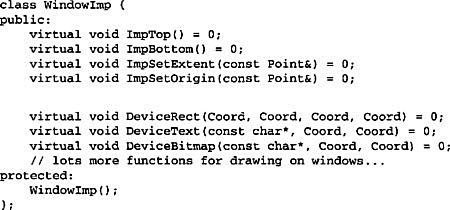
Subclasses of Window define the different kinds of windows the application might use, such as application windows, icons, transient windows for dialogs, floating palettes of tools, and so on.
For example, ApplicationWindow will implement DrawContents to draw the View instance it stores:
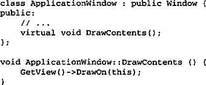
IconWindow stores the name of a bitmap for the icon it displays...
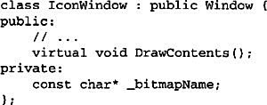
...and it implements DrawContents to draw the bitmap on the window:
Many other variations of Window are possible. A TransientWindow may need to communicate with the window that created it during the dialog; hence it keeps a reference to that window. A PaletteWindow always floats above other windows. An IconDockWindow holds IconWindows and arranges them neatly.
Window operations are defined in terms of the WindowImp interface. For example, DrawRect extracts four coordinates from its two Point parameters before calling the WindowImp operation that draws the rectangle in the window:
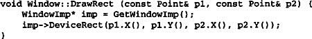
Concrete subclasses of WindowImp support different window systems. The XWindowImp subclass supports the X Window System:
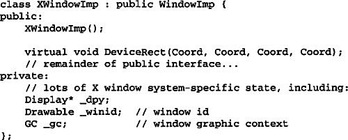
For Presentation Manager (PM), we define a PMWindowImp class:
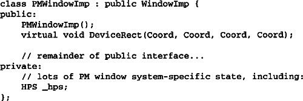
These subclasses implement WindowImp operations in terms of window system primitives. For example, DeviceRect is implemented for X as follows:
The PM implementation might look like this:
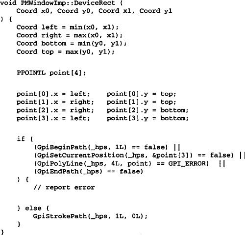
How does a window obtain an instance of the right WindowImp subclass? We’ll assume Window has that responsibility in this example. Its GetWindowImp operation gets the right instance from an abstract factory (see Abstract Factory (87)) that effectively encapsulates all window system specifics.
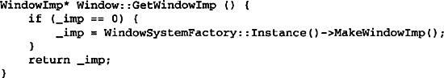
WindowSystemFactory::Instance() returns an abstract factory that manufactures all window system-specific objects. For simplicity, we’ve made it a Singleton (127) and have let the Window class access the factory directly.
The Window example above comes from ET++ [WGM88]. In ET++, WindowImp is called “WindowPort” and has subclasses such as XWindowPort and SunWindowPort. The Window object creates its corresponding Implementor object by requesting it from an abstract factory called “WindowSystem.” WindowSystem provides an interface for creating platform-specific objects such as fonts, cursors, bitmaps, and so forth.
The ET++ Window/WindowPort design extends the Bridge pattern in that the WindowPort also keeps a reference back to the Window. The WindowPort implementor class uses this reference to notify Window about WindowPort-specific events: the arrival of input events, window resizes, etc.
Both Coplien [Cop92] and Stroustrup [Str91] mention Handle classes and give some examples. Their examples emphasize memory management issues like sharing string representations and support for variable-sized objects. Our focus is more on supporting independent extension of both an abstraction and its implementation.
libg++ [Lea88] defines classes that implement common data structures, such as Set, LinkedSet, HashSet, LinkedList, and HashTable. Set is an abstract class that defines a set abstraction, while LinkedList and HashTable are concrete implementors for a linked list and a hash table, respectively. LinkedSet and HashSet are Set implementors that bridge between Set and their concrete counterparts LinkedList and HashTable. This is an example of a degenerate bridge, because there’s no abstract Implementor class.
NeXT’s AppKit [Add94] uses the Bridge pattern in the implementation and display of graphical images. An image can be represented in several different ways. The optimal display of an image depends on the properties of a display device, specifically its color capabilities and its resolution. Without help from AppKit, developers would have to determine which implementation to use under various circumstances in every application.
To relieve developers of this responsibility, AppKit provides an NXImage/NXImageRep bridge. NXImage defines the interface for handling images. The implementation of images is defined in a separate NXImageRep class hierarchy having subclasses such as NXEPSImageRep, NXCachedImageRep, and NXBitMapImageRep. NXImage maintains a reference to one or more NXImageRep objects. If there is more than one image implementation, then NXImage selects the most appropriate one for the current display device. NXImage is even capable of converting one implementation to another if necessary. The interesting aspect of this Bridge variant is that NXImage can store more than one NXImageRep implementation at a time.
An Abstract Factory (87) can create and configure a particular Bridge.
The Adapter (139) pattern is geared toward making unrelated classes work together. It is usually applied to systems after they’re designed. Bridge, on the other hand, is used up-front in a design to let abstractions and implementations vary independently.
Compose objects into tree structures to represent part-whole hierarchies. Composite lets clients treat individual objects and compositions of objects uniformly.
Graphics applications like drawing editors and schematic capture systems let users build complex diagrams out of simple components. The user can group components to form larger components, which in turn can be grouped to form still larger components. A simple implementation could define classes for graphical primitives such as Text and Lines plus other classes that act as containers for these primitives.
But there’s a problem with this approach: Code that uses these classes must treat primitive and container objects differently, even if most of the time the user treats them identically. Having to distinguish these objects makes the application more complex. The Composite pattern describes how to use recursive composition so that clients don’t have to make this distinction.
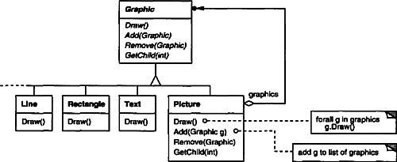
The key to the Composite pattern is an abstract class that represents both primitives and their containers. For the graphics system, this class is Graphic. Graphic declares operations like Draw that are specific to graphical objects. It also declares operations that all composite objects share, such as operations for accessing and managing its children.
The subclasses Line, Rectangle, and Text (see preceding class diagram) define primitive graphical objects. These classes implement Draw to draw lines, rectangles, and text, respectively. Since primitive graphics have no child graphics, none of these subclasses implements child-related operations.
The Picture class defines an aggregate of Graphic objects. Picture implements Draw to call Draw on its children, and it implements child-related operations accordingly. Because the Picture interface conforms to the Graphic interface, Picture objects can compose other Pictures recursively.
The following diagram shows a typical composite object structure of recursively composed Graphic objects:
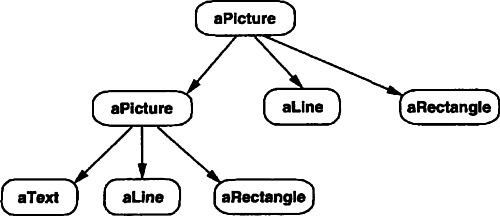
Use the Composite pattern when
• you want to represent part-whole hierarchies of objects.
• you want clients to be able to ignore the difference between compositions of objects and individual objects. Clients will treat all objects in the composite structure uniformly.
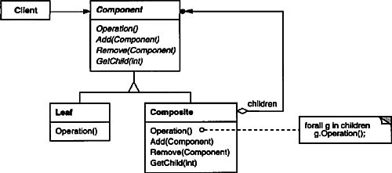
A typical Composite object structure might look like this:
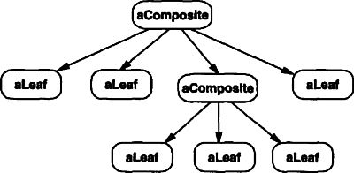
• Component (Graphic)
– declares the interface for objects in the composition.
– implements default behavior for the interface common to all classes, as appropriate.
– declares an interface for accessing and managing its child components.
– (optional) defines an interface for accessing a component’s parent in the recursive structure, and implements it if that’s appropriate.
• Leaf (Rectangle, Line, Text, etc.)
– represents leaf objects in the composition. A leaf has no children.
– defines behavior for primitive objects in the composition.
• Composite (Picture)
– defines behavior for components having children.
– stores child components.
– implements child-related operations in the Component interface.
• Client
– manipulates objects in the composition through the Component interface.
• Clients use the Component class interface to interact with objects in the composite structure. If the recipient is a Leaf, then the request is handled directly. If the recipient is a Composite, then it usually forwards requests to its child components, possibly performing additional operations before and/or after forwarding.
The Composite pattern
• defines class hierarchies consisting of primitive objects and composite objects. Primitive objects can be composed into more complex objects, which in turn can be composed, and so on recursively. Wherever client code expects a primitive object, it can also take a composite object.
• makes the client simple. Clients can treat composite structures and individual objects uniformly. Clients normally don’t know (and shouldn’t care) whether they’re dealing with a leaf or a composite component. This simplifies client code, because it avoids having to write tag-and-case-statement-style functions over the classes that define the composition.
• makes it easier to add new kinds of components. Newly defined Composite or Leaf subclasses work automatically with existing structures and client code. Clients don’t have to be changed for new Component classes.
• can make your design overly general. The disadvantage of making it easy to add new components is that it makes it harder to restrict the components of a composite. Sometimes you want a composite to have only certain components. With Composite, you can’t rely on the type system to enforce those constraints for you. You’ll have to use run-time checks instead.
There are many issues to consider when implementing the Composite pattern:
1. Explicit parent references. Maintaining references from child components to their parent can simplify the traversal and management of a composite structure. The parent reference simplifies moving up the structure and deleting a component. Parent references also help support the Chain of Responsibility (223) pattern.
The usual place to define the parent reference is in the Component class. Leaf and Composite classes can inherit the reference and the operations that manage it.
With parent references, it’s essential to maintain the invariant that all children of a composite have as their parent the composite that in turn has them as children. The easiest way to ensure this is to change a component’s parent only when it’s being added or removed from a composite. If this can be implemented once in the Add and Remove operations of the Composite class, then it can be inherited by all the subclasses, and the invariant will be maintained automatically.
2. Sharing components. It’s often useful to share components, for example, to reduce storage requirements. But when a component can have no more than one parent, sharing components becomes difficult.
A possible solution is for children to store multiple parents. But that can lead to ambiguities as a request propagates up the structure. The Flyweight (195) pattern shows how to rework a design to avoid storing parents altogether. It works in cases where children can avoid sending parent requests by externalizing some or all of their state.
3. Maximizing the Component interface. One of the goals of the Composite pattern is to make clients unaware of the specific Leaf or Composite classes they’re using. To attain this goal, the Component class should define as many common operations for Composite and Leaf classes as possible. The Component class usually provides default implementations for these operations, and Leaf and Composite subclasses will override them.
However, this goal will sometimes conflict with the principle of class hierarchy design that says a class should only define operations that are meaningful to its subclasses. There are many operations that Component supports that don’t seem to make sense for Leaf classes. How can Component provide a default implementation for them?
Sometimes a little creativity shows how an operation that would appear to make sense only for Composites can be implemented for all Components by moving it to the Component class. For example, the interface for accessing children is a fundamental part of a Composite class but not necessarily Leaf classes. But if we view a Leaf as a Component that never has children, then we can define a default operation for child access in the Component class that never returns any children. Leaf classes can use the default implementation, but Composite classes will reimplement it to return their children.
The child management operations are more troublesome and are discussed in the next item.
4. Declaring the child management operations. Although the Composite class implements the Add and Remove operations for managing children, an important issue in the Composite pattern is which classes declare these operations in the Composite class hierarchy. Should we declare these operations in the Component and make them meaningful for Leaf classes, or should we declare and define them only in Composite and its subclasses?
The decision involves a trade-off between safety and transparency:
• Defining the child management interface at the root of the class hierarchy gives you transparency, because you can treat all components uniformly. It costs you safety, however, because clients may try to do meaningless things like add and remove objects from leaves.
• Defining child management in the Composite class gives you safety, because any attempt to add or remove objects from leaves will be caught at compile-time in a statically typed language like C++. But you lose transparency, because leaves and composites have different interfaces.
We have emphasized transparency over safety in this pattern. If you opt for safety, then at times you may lose type information and have to convert a component into a composite. How can you do this without resorting to a type-unsafe cast?
One approach is to declare an operation Composite* GetComposite() in the Component class. Component provides a default operation that returns a null pointer. The Composite class redefines this operation to return itself through the this pointer:
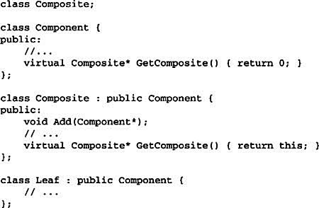
GetComposite lets you query a component to see if it’s a composite. You can perform Add and Remove safely on the composite it returns.

Similar tests for a Composite can be done using the C++ dynamic_cast construct.
Of course, the problem here is that we don’t treat all components uniformly. We have to revert to testing for different types before taking the appropriate action.
The only way to provide transparency is to define default Add and Remove operations in Component. That creates a new problem: There’s no way to implement Component::Add without introducing the possibility of it failing. You could make it do nothing, but that ignores an important consideration; that is, an attempt to add something to a leaf probably indicates a bug. In that case, the Add operation produces garbage. You could make it delete its argument, but that might not be what clients expect.
Usually it’s better to make Add and Remove fail by default (perhaps by raising an exception) if the component isn’t allowed to have children or if the argument of Remove isn’t a child of the component, respectively.
Another alternative is to change the meaning of “remove” slightly. If the component maintains a parent reference, then we could redefine Component::Remove to remove itself from its parent. However, there still isn’t a meaningful interpretation for a corresponding Add.
5. Should Component implement a list of Components? You might be tempted to define the set of children as an instance variable in the Component class where the child access and management operations are declared. But putting the child pointer in the base class incurs a space penalty for every leaf, even though a leaf never has children. This is worthwhile only if there are relatively few children in the structure.
6. Child ordering. Many designs specify an ordering on the children of Composite. In the earlier Graphics example, ordering may reflect front-to-back ordering. If Composites represent parse trees, then compound statements can be instances of a Composite whose children must be ordered to reflect the program.
When child ordering is an issue, you must design child access and management interfaces carefully to manage the sequence of children. The Iterator (257) pattern can guide you in this.
7. Caching to improve performance. If you need to traverse or search compositions frequently, the Composite class can cache traversal or search information about its children. The Composite can cache actual results or just information that lets it short-circuit the traversal or search. For example, the Picture class from the Motivation example could cache the bounding box of its children. During drawing or selection, this cached bounding box lets the Picture avoid drawing or searching when its children aren’t visible in the current window.
Changes to a component will require invalidating the caches of its parents. This works best when components know their parents. So if you’re using caching, you need to define an interface for telling composites that their caches are invalid.
8. Who should delete components? In languages without garbage collection, it’s usually best to make a Composite responsible for deleting its children when it’s destroyed. An exception to this rule is when Leaf objects are immutable and thus can be shared.
9. What’s the best data structure for storing components? Composites may use a variety of data structures to store their children, including linked lists, trees, arrays, and hash tables. The choice of data structure depends (as always) on efficiency. In fact, it isn’t even necessary to use a general-purpose data structure at all. Sometimes composites have a variable for each child, although this requires each subclass of Composite to implement its own management interface. See Interpreter (243) for an example.
Equipment such as computers and stereo components are often organized into part-whole or containment hierarchies. For example, a chassis can contain drives and planar boards, a bus can contain cards, and a cabinet can contain chassis, buses, and so forth. Such structures can be modeled naturally with the Composite pattern.
Equipment class defines an interface for all equipment in the part-whole hierarchy.

Equipment declares operations that return the attributes of a piece of equipment, like its power consumption and cost. Subclasses implement these operations for specific kinds of equipment. Equipment also declares a CreateIterator operation that returns an Iterator (see Appendix C) for accessing its parts. The default implementation for this operation returns a NullIterator, which iterates over the empty set.
Subclasses of Equipment might include Leaf classes that represent disk drives, integrated circuits, and switches:
CompositeEquipment is the base class for equipment that contains other equipment. It’s also a subclass of Equipment.
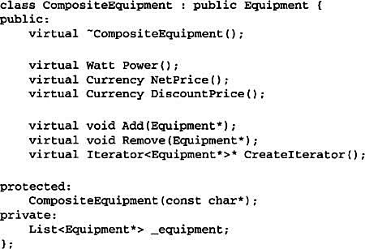
CompositeEquipment defines the operations for accessing and managing subequipment. The operations Add and Remove insert and delete equipment from the list of equipment stored in the _equipment member. The operation CreateIterator returns an iterator (specifically, an instance of ListIterator) that will traverse this list.
A default implementation of NetPrice might use CreateIterator to sum the net prices of the subequipment2:
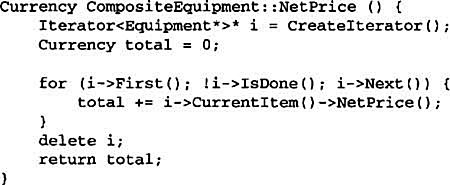
Now we can represent a computer chassis as a subclass of CompositeEquipment called Chassis. Chassis inherits the child-related operations from CompositeEquipment.
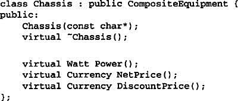
We can define other equipment containers such as Cabinet and Bus in a similar way. That gives us everything we need to assemble equipment into a (pretty simple) personal computer:
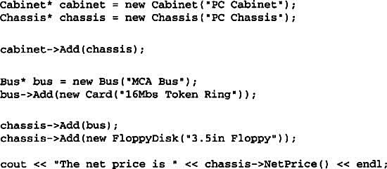
Examples of the Composite pattern can be found in almost all object-oriented systems. The original View class of Smalltalk Model/View/Controller [KP88] was a Composite, and nearly every user interface toolkit or framework has followed in its steps, including ET++ (with its VObjects [WGM88]) and Interviews (Styles [LCI+92], Graphics [VL88], and Glyphs [CL90]). It’s interesting to note that the original View of Model/View/Controller had a set of subviews; in other words, View was both the Component class and the Composite class. Release 4.0 of Smalltalk-80 revised Model/View/Controller with a VisualComponent class that has subclasses View and CompositeView.
The RTL Smalltalk compiler framework [JML92] uses the Composite pattern extensively. RTLExpression is a Component class for parse trees. It has subclasses, such as BinaryExpression, that contain child RTLExpression objects. These classes define a composite structure for parse trees. RegisterTransfer is the Component class for a program’s intermediate Single Static Assignment (SSA) form. Leaf subclasses of RegisterTransfer define different static assignments such as
• primitive assignments that perform an operation on two registers and assign the result to a third;
• an assignment with a source register but no destination register, which indicates that the register is used after a routine returns; and
• an assignment with a destination register but no source, which indicates that the register is assigned before the routine starts.
Another subclass, RegisterTransferSet, is a Composite class for representing assignments that change several registers at once.
Another example of this pattern occurs in the financial domain, where a portfolio aggregates individual assets. You can support complex aggregations of assets by implementing a portfolio as a Composite that conforms to the interface of an individual asset [BE93].
The Command (233) pattern describes how Command objects can be composed and sequenced with a MacroCommand Composite class.
Often the component-parent link is used for a Chain of Responsibility (223).
Decorator (175) is often used with Composite. When decorators and composites are used together, they will usually have a common parent class. So decorators will have to support the Component interface with operations like Add, Remove, and GetChild.
Flyweight (195) lets you share components, but they can no longer refer to their parents.
Iterator (257) can be used to traverse composites.
Visitor (331) localizes operations and behavior that would otherwise be distributed across Composite and Leaf classes.
Attach additional responsibilities to an object dynamically. Decorators provide a flexible alternative to subclassing for extending functionality.
Wrapper
Sometimes we want to add responsibilities to individual objects, not to an entire class. A graphical user interface toolkit, for example, should let you add properties like borders or behaviors like scrolling to any user interface component.
One way to add responsibilities is with inheritance. Inheriting a border from another class puts a border around every subclass instance. This is inflexible, however, because the choice of border is made statically. A client can’t control how and when to decorate the component with a border.
A more flexible approach is to enclose the component in another object that adds the border. The enclosing object is called a decorator. The decorator conforms to the interface of the component it decorates so that its presence is transparent to the component’s clients. The decorator forwards requests to the component and may perform additional actions (such as drawing a border) before or after forwarding. Transparency lets you nest decorators recursively, thereby allowing an unlimited number of added responsibilities.
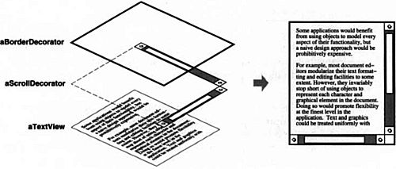
For example, suppose we have a TextView object that displays text in a window. TextView has no scroll bars by default, because we might not always need them. When we do, we can use a ScrollDecorator to add them. Suppose we also want to add a thick black border around the TextView. We can use a BorderDecorator to add this as well. We simply compose the decorators with the TextView to produce the desired result.
The following object diagram shows how to compose a TextView object with BorderDecorator and ScrollDecorator objects to produce a bordered, scrollable text view:
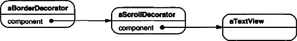
The ScrollDecorator and BorderDecorator classes are subclasses of Decorator, an abstract class for visual components that decorate other visual components.
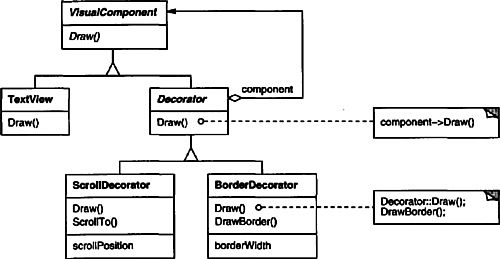
VisualComponent is the abstract class for visual objects. It defines their drawing and event handling interface. Note how the Decorator class simply forwards draw requests to its component, and how Decorator subclasses can extend this operation.
Decorator subclasses are free to add operations for specific functionality. For example, ScrollDecorator’s ScrollTo operation lets other objects scroll the interface if they know there happens to be a ScrollDecorator object in the interface. The important aspect of this pattern is that it lets decorators appear anywhere a VisualComponent can. That way clients generally can’t tell the difference between a decorated component and an undecorated one, and so they don’t depend at all on the decoration.
Use Decorator
• to add responsibilities to individual objects dynamically and transparently, that is, without affecting other objects.
• for responsibilities that can be withdrawn.
• when extension by subclassing is impractical. Sometimes a large number of independent extensions are possible and would produce an explosion of subclasses to support every combination. Or a class definition may be hidden or otherwise unavailable for subclassing.
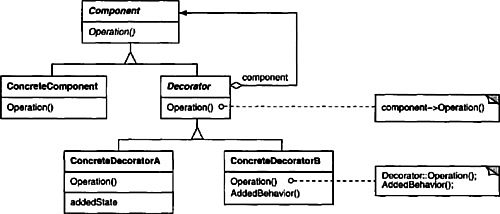
• Component (VisualComponent)
– defines the interface for objects that can have responsibilities added to them dynamically.
• ConcreteComponent (TextView)
– defines an object to which additional responsibilities can be attached.
• Decorator
– maintains a reference to a Component object and defines an interface that conforms to Component’s interface.
• ConcreteDecorator (BorderDecorator, ScrollDecorator)
– adds responsibilities to the component.
• Decorator forwards requests to its Component object. It may optionally perform additional operations before and after forwarding the request.
The Decorator pattern has at least two key benefits and two liabilities:
1. More flexibility than static inheritance. The Decorator pattern provides a more flexible way to add responsibilities to objects than can be had with static (multiple) inheritance. With decorators, responsibilities can be added and removed at run-time simply by attaching and detaching them. In contrast, inheritance requires creating a new class for each additional responsibility (e.g., BorderedScrollableTextView, BorderedTextView). This gives rise to many classes and increases the complexity of a system. Furthermore, providing different Decorator classes for a specific Component class lets you mix and match responsibilities.
Decorators also make it easy to add a property twice. For example, to give a TextView a double border, simply attach two BorderDecorators. Inheriting from a Border class twice is error-prone at best.
2. Avoids feature-laden classes high up in the hierarchy. Decorator offers a pay-as-you-go approach to adding responsibilities. Instead of trying to support all foreseeable features in a complex, customizable class, you can define a simple class and add functionality incrementally with Decorator objects. Functionality can be composed from simple pieces. As a result, an application needn’t pay for features it doesn’t use. It’s also easy to define new kinds of Decorators independently from the classes of objects they extend, even for unforeseen extensions. Extending a complex class tends to expose details unrelated to the responsibilities you’re adding.
3. A decorator and its component aren’t identical. A decorator acts as a transparent enclosure. But from an object identity point of view, a decorated component is not identical to the component itself. Hence you shouldn’t rely on object identity when you use decorators.
4. Lots of little objects. A design that uses Decorator often results in systems composed of lots of little objects that all look alike. The objects differ only in the way they are interconnected, not in their class or in the value of their variables. Although these systems are easy to customize by those who understand them, they can be hard to learn and debug.
Several issues should be considered when applying the Decorator pattern:
1. Interface conformance. A decorator object’s interface must conform to the interface of the component it decorates. ConcreteDecorator classes must therefore inherit from a common class (at least in C++).
2. Omitting the abstract Decorator class. There’s no need to define an abstract Decorator class when you only need to add one responsibility. That’s often the case when you’re dealing with an existing class hierarchy rather than designing a new one. In that case, you can merge Decorator’s responsibility for forwarding requests to the component into the ConcreteDecorator.
3. Keeping Component classes lightweight. To ensure a conforming interface, components and decorators must descend from a common Component class. It’s important to keep this common class lightweight; that is, it should focus on defining an interface, not on storing data. The definition of the data representation should be deferred to subclasses; otherwise the complexity of the Component class might make the decorators too heavyweight to use in quantity. Putting a lot of functionality into Component also increases the probability that concrete subclasses will pay for features they don’t need.
4. Changing the skin of an object versus changing its guts. We can think of a decorator as a skin over an object that changes its behavior. An alternative is to change the object’s guts. The Strategy (315) pattern is a good example of a pattern for changing the guts.
Strategies are a better choice in situations where the Component class is intrinsically heavyweight, thereby making the Decorator pattern too costly to apply. In the Strategy pattern, the component forwards some of its behavior to a separate strategy object. The Strategy pattern lets us alter or extend the component’s functionality by replacing the strategy object.
For example, we can support different border styles by having the component defer border-drawing to a separate Border object. The Border object is a Strategy object that encapsulates a border-drawing strategy. By extending the number of strategies from just one to an open-ended list, we achieve the same effect as nesting decorators recursively.
In MacApp 3.0 [App89] and Bedrock [Sym93a], for example, graphical components (called “views”) maintain a list of “adorner” objects that can attach additional adornments like borders to a view component. If a view has any adorners attached, then it gives them a chance to draw additional embellishments. MacApp and Bedrock must use this approach because the View class is heavyweight. It would be too expensive to use a full-fledged View just to add a border.
Since the Decorator pattern only changes a component from the outside, the component doesn’t have to know anything about its decorators; that is, the decorators are transparent to the component:
With strategies, the component itself knows about possible extensions. So it has to reference and maintain the corresponding strategies:
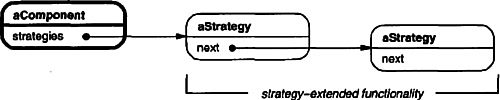
The Strategy-based approach might require modifying the component to accommodate new extensions. On the other hand, a strategy can have its own specialized interface, whereas a decorator’s interface must conform to the component’s. A strategy for rendering a border, for example, need only define the interface for rendering a border (DrawBorder, GetWidth, etc.), which means that the strategy can be lightweight even if the Component class is heavyweight.
MacApp and Bedrock use this approach for more than just adorning views. They also use it to augment the event-handling behavior of objects. In both systems, a view maintains a list of “behavior” objects that can modify and intercept events. The view gives each of the registered behavior objects a chance to handle the event before nonregistered behaviors, effectively overriding them. You can decorate a view with special keyboard-handling support, for example, by registering a behavior object that intercepts and handles key events.
The following code shows how to implement user interface decorators in C++. We’ll assume there’s a Component class called VisualComponent.
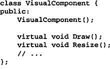
We define a subclass of VisualComponent called Decorator, which we’ll subclass to obtain different decorations.
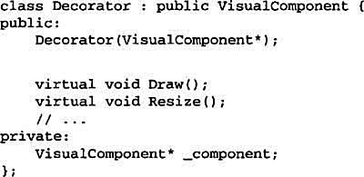
Decorator decorates the VisualComponent referenced by the _component instance variable, which is initialized in the constructor. For each operation in VisualComponent’s interface, Decorator defines a default implementation that passes the request on to _component:
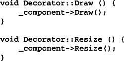
Subclasses of Decorator define specific decorations. For example, the class BorderDecorator adds a border to its enclosing component. BorderDecorator is a subclass of Decorator that overrides the Draw operation to draw the border. BorderDecorator also defines a private DrawBorder helper operation that does the drawing. The subclass inherits all other operation implementations from Decorator.
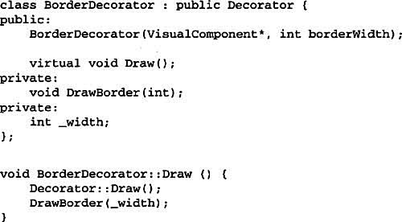
A similar implementation would follow for ScrollDecorator and DropShadowDecorator, which would add scrolling and drop shadow capabilities to a visual component.
Now we can compose instances of these classes to provide different decorations. The following code illustrates how we can use decorators to create a bordered scrollable TextView.
First, we need a way to put a visual component into a window object. We’ll assume our Window class provides a SetContents operation for this purpose:
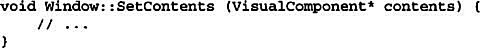
Now we can create the text view and a window to put it in:

TextView is a VisualComponent, which lets us put it into the window:
window->SetContents(textView);
But we want a bordered and scrollable TextView. So we decorate it accordingly before putting it in the window.
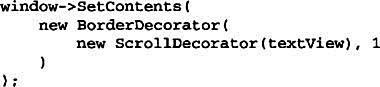
Because Window accesses its contents through the VisualComponent interface, it’s unaware of the decorator’s presence. You, as the client, can still keep track of the text view if you have to interact with it directly, for example, when you need to invoke operations that aren’t part of the VisualComponent interface. Clients that rely on the component’s identity should refer to it directly as well.
Many object-oriented user interface toolkits use decorators to add graphical embellishments to widgets. Examples include Interviews [LVC89, LCI+92], ET++ [WGM88], and the ObjectWorks\Smalltalk class library [Par90]. More exotic applications of Decorator are the DebuggingGlyph from Interviews and the PassivityWrapper from ParcPlace Smalltalk. A DebuggingGlyph prints out debugging information before and after it forwards a layout request to its component. This trace information can be used to analyze and debug the layout behavior of objects in a complex composition. The PassivityWrapper can enable or disable user interactions with the component.
But the Decorator pattern is by no means limited to graphical user interfaces, as the following example (based on the ET++ streaming classes [WGM88]) illustrates.
Streams are a fundamental abstraction in most I/O facilities. A stream can provide an interface for converting objects into a sequence of bytes or characters. That lets us transcribe an object to a file or to a string in memory for retrieval later. A straightforward way to do this is to define an abstract Stream class with subclasses MemoryStream and FileStream. But suppose we also want to be able to do the following:
• Compress the stream data using different compression algorithms (run-length encoding, Lempel-Ziv, etc.).
• Reduce the stream data to 7-bit ASCII characters so that it can be transmitted over an ASCII communication channel.
The Decorator pattern gives us an elegant way to add these responsibilities to streams. The diagram below shows one solution to the problem:

The Stream abstract class maintains an internal buffer and provides operations for storing data onto the stream (PutInt, PutString). Whenever the buffer is full, Stream calls the abstract operation HandleBufferFull, which does the actual data transfer. The FileStream version of this operation overrides this operation to transfer the buffer to a file.
The key class here is StreamDecorator, which maintains a reference to a component stream and forwards requests to it. StreamDecorator subclasses override HandleBufferFull and perform additional actions before calling StreamDecorator’s HandleBufferFull operation.
For example, the CompressingStream subclass compresses the data, and the ASCII7Stream converts the data into 7-bit ASCII. Now, to create a FileStream that compresses its data and converts the compressed binary data to 7-bit ASCII, we decorate a FileStream with a CompressingStream and an ASCII7Stream:
Adapter (139): A decorator is different from an adapter in that a decorator only changes an object’s responsibilities, not its interface; an adapter will give an object a completely new interface.
Composite (163): A decorator can be viewed as a degenerate composite with only one component. However, a decorator adds additional responsibilities—it isn’t intended for object aggregation.
Strategy (315): A decorator lets you change the skin of an object; a strategy lets you change the guts. These are two alternative ways of changing an object.
Provide a unified interface to a set of interfaces in a subsystem. Facade defines a higher-level interface that makes the subsystem easier to use.
Structuring a system into subsystems helps reduce complexity. A common design goal is to minimize the communication and dependencies between subsystems. One way to achieve this goal is to introduce a facade object that provides a single, simplified interface to the more general facilities of a subsystem.
Consider for example a programming environment that gives applications access to its compiler subsystem. This subsystem contains classes such as Scanner, Parser, ProgramNode, BytecodeStream, and ProgramNodeBuilder that implement the compiler. Some specialized applications might need to access these classes directly. But most clients of a compiler generally don’t care about details like parsing and code generation; they merely want to compile some code. For them, the powerful but low-level interfaces in the compiler subsystem only complicate their task.
To provide a higher-level interface that can shield clients from these classes, the compiler subsystem also includes a Compiler class. This class defines a unified interface to the compiler’s functionality. The Compiler class acts as a facade: It offers clients a single, simple interface to the compiler subsystem. It glues together the classes that implement compiler functionality without hiding them completely. The compiler facade makes life easier for most programmers without hiding the lower-level functionality from the few that need it.
Use the Facade pattern when
• you want to provide a simple interface to a complex subsystem. Subsystems often get more complex as they evolve. Most patterns, when applied, result in more and smaller classes. This makes the subsystem more reusable and easier to customize, but it also becomes harder to use for clients that don’t need to customize it. A facade can provide a simple default view of the subsystem that is good enough for most clients. Only clients needing more customizability will need to look beyond the facade.
• there are many dependencies between clients and the implementation classes of an abstraction. Introduce a facade to decouple the subsystem from clients and other subsystems, thereby promoting subsystem independence and portability.
• you want to layer your subsystems. Use a facade to define an entry point to each subsystem level. If subsystems are dependent, then you can simplify the dependencies between them by making them communicate with each other solely through their facades.
• Facade (Compiler)
– knows which subsystem classes are responsible for a request.
– delegates client requests to appropriate subsystem objects.
• subsystem classes (Scanner, Parser, ProgramNode, etc.)
– implement subsystem functionality.
– handle work assigned by the Facade object.
– have no knowledge of the facade; that is, they keep no references to it.
• Clients communicate with the subsystem by sending requests to Facade, which forwards them to the appropriate subsystem object(s). Although the subsystem objects perform the actual work, the facade may have to do work of its own to translate its interface to subsystem interfaces.
• Clients that use the facade don’t have to access its subsystem objects directly.
The Facade pattern offers the following benefits:
1. It shields clients from subsystem components, thereby reducing the number of objects that clients deal with and making the subsystem easier to use.
2. It promotes weak coupling between the subsystem and its clients. Often the components in a subsystem are strongly coupled. Weak coupling lets you vary the components of the subsystem without affecting its clients. Facades help layer a system and the dependencies between objects. They can eliminate complex or circular dependencies. This can be an important consequence when the client and the subsystem are implemented independently.
Reducing compilation dependencies is vital in large software systems. You want to save time by minimizing recompilation when subsystem classes change. Reducing compilation dependencies with facades can limit the re-compilation needed for a small change in an important subsystem. A facade can also simplify porting systems to other platforms, because it’s less likely that building one subsystem requires building all others.
3. It doesn’t prevent applications from using subsystem classes if they need to. Thus you can choose between ease of use and generality.
Consider the following issues when implementing a facade:
1. Reducing client-subsystem coupling. The coupling between clients and the subsystem can be reduced even further by making Facade an abstract class with concrete subclasses for different implementations of a subsystem. Then clients can communicate with the subsystem through the interface of the abstract Facade class. This abstract coupling keeps clients from knowing which implementation of a subsystem is used.
An alternative to subclassing is to configure a Facade object with different subsystem objects. To customize the facade, simply replace one or more of its subsystem objects.
2. Public versus private subsystem classes. A subsystem is analogous to a class in that both have interfaces, and both encapsulate something—a class encapsulates state and operations, while a subsystem encapsulates classes. And just as it’s useful to think of the public and private interface of a class, we can think of the public and private interface of a subsystem.
The public interface to a subsystem consists of classes that all clients can access; the private interface is just for subsystem extenders. The Facade class is part of the public interface, of course, but it’s not the only part. Other subsystem classes are usually public as well. For example, the classes Parser and Scanner in the compiler subsystem are part of the public interface.
Making subsystem classes private would be useful, but few object-oriented languages support it. Both C++ and Smalltalk traditionally have had a global name space for classes. Recently, however, the C++ standardization committee added name spaces to the language [Str94], which will let you expose just the public subsystem classes.
Let’s take a closer look at how to put a facade on a compiler subsystem.
The compiler subsystem defines a BytecodeStream class that implements a stream of Bytecode objects. A Bytecode object encapsulates a bytecode, which can specify machine instructions. The subsystem also defines a Token class for objects that encapsulate tokens in the programming language.
The Scanner class takes a stream of characters and produces a stream of tokens, one token at a time.
The class Parser uses a ProgramNodeBuilder to construct a parse tree from a Scanner’s tokens.
Parser calls back on ProgramNodeBuilder to build the parse tree incrementally. These classes interact according to the Builder (97) pattern.
The parse tree is made up of instances of ProgramNode subclasses such as StatementNode, ExpressionNode, and so forth. The ProgramNode hierarchy is an example of the Composite (163) pattern. ProgramNode defines an interface for manipulating the program node and its children, if any.
The Traverse operation takes a CodeGenerator object. ProgramNode subclasses use this object to generate machine code in the form of Bytecode objects on a BytecodeStream. The class CodeGenerator is a visitor (see Visitor (331)).
CodeGenerator has subclasses, for example, StackMachineCodeGenerator and RISCCodeGenerator, that generate machine code for different hardware architectures.
Each subclass of ProgramNode implements Traverse to call Traverse on its child ProgramNode objects. In turn, each child does the same for its children, and so on recursively. For example, ExpressionNode defines Traverse as follows:
The classes we’ve discussed so far make up the compiler subsystem. Now we’ll introduce a Compiler class, a facade that puts all these pieces together. Compiler provides a simple interface for compiling source and generating code for a particular machine.
This implementation hard-codes the type of code generator to use so that programmers aren’t required to specify the target architecture. That might be reasonable if there’s only ever one target architecture. If that’s not the case, then we might want to change the Compiler constructor to take a CodeGenerator parameter. Then programmers can specify the generator to use when they instantiate Compiler. The compiler facade can parameterize other participants such as Scanner and ProgramNodeBuilder as well, which adds flexibility, but it also detracts from the Facade pattern’s mission, which is to simplify the interface for the common case.
The compiler example in the Sample Code section was inspired by the Object-Works\Smalltalk compiler system [Par90].
In the ET++ application framework [WGM88], an application can have built-in browsing tools for inspecting its objects at run-time. These browsing tools are implemented in a separate subsystem that includes a Facade class called “ProgrammingEnvironment.” This facade defines operations such as InspectObject and InspectClass for accessing the browsers.
An ET++ application can also forgo built-in browsing support. In that case, ProgrammingEnvironment implements these requests as null operations; that is, they do nothing. Only the ETProgrammingEnvironment subclass implements these requests with operations that display the corresponding browsers. The application has no knowledge of whether a browsing environment is available or not; there’s abstract coupling between the application and the browsing subsystem.
The Choices operating system [CIRM93] uses facades to compose many frameworks into one. The key abstractions in Choices are processes, storage, and address spaces. For each of these abstractions there is a corresponding subsystem, implemented as a framework, that supports porting Choices to a variety of different hardware platforms. Two of these subsystems have a “representative” (i.e., facade). These representatives are FileSystemInterface (storage) and Domain (address spaces).
For example, the virtual memory framework has Domain as its facade. A Domain represents an address space. It provides a mapping between virtual addresses and offsets into memory objects, files, or backing store. The main operations on Domain support adding a memory object at a particular address, removing a memory object, and handling a page fault.
As the preceding diagram shows, the virtual memory subsystem uses the following components internally:
• MemoryObject represents a data store.
• MemoryObjectCache caches the data of MemoryObjects in physical memory. MemoryObjectCache is actually a Strategy (315) that localizes the caching policy.
• AddressTranslation encapsulates the address translation hardware.
The RepairFault operation is called whenever a page fault interrupt occurs. The Domain finds the memory object at the address causing the fault and delegates the RepairFault operation to the cache associated with that memory object. Domains can be customized by changing their components.
Abstract Factory (87) can be used with Facade to provide an interface for creating subsystem objects in a subsystem-independent way. Abstract Factory can also be used as an alternative to Facade to hide platform-specific classes.
Mediator (273) is similar to Facade in that it abstracts functionality of existing classes. However, Mediator’s purpose is to abstract arbitrary communication between colleague objects, often centralizing functionality that doesn’t belong in any one of them. A mediator’s colleagues are aware of and communicate with the mediator instead of communicating with each other directly. In contrast, a facade merely abstracts the interface to subsystem objects to make them easier to use; it doesn’t define new functionality, and subsystem classes don’t know about it.
Usually only one Facade object is required. Thus Facade objects are often Singletons (127).
Use sharing to support large numbers of fine-grained objects efficiently.
Some applications could benefit from using objects throughout their design, but a naive implementation would be prohibitively expensive.
For example, most document editor implementations have text formatting and editing facilities that are modularized to some extent. Object-oriented document editors typically use objects to represent embedded elements like tables and figures. However, they usually stop short of using an object for each character in the document, even though doing so would promote flexibility at the finest levels in the application. Characters and embedded elements could then be treated uniformly with respect to how they are drawn and formatted. The application could be extended to support new character sets without disturbing other functionality. The application’s object structure could mimic the document’s physical structure. The following diagram shows how a document editor can use objects to represent characters.
The drawback of such a design is its cost. Even moderate-sized documents may require hundreds of thousands of character objects, which will consume lots of memory and may incur unacceptable run-time overhead. The Flyweight pattern describes how to share objects to allow their use at fine granularities without prohibitive cost.
A flyweight is a shared object that can be used in multiple contexts simultaneously. The flyweight acts as an independent object in each context—it’s indistinguishable from an instance of the object that’s not shared. Flyweights cannot make assumptions about the context in which they operate. The key concept here is the distinction between intrinsic and extrinsic state. Intrinsic state is stored in the flyweight; it consists of information that’s independent of the flyweight’s context, thereby making it sharable. Extrinsic state depends on and varies with the flyweight’s context and therefore can’t be shared. Client objects are responsible for passing extrinsic state to the flyweight when it needs it.
Flyweights model concepts or entities that are normally too plentiful to represent with objects. For example, a document editor can create a flyweight for each letter of the alphabet. Each flyweight stores a character code, but its coordinate position in the document and its typographic style can be determined from the text layout algorithms and formatting commands in effect wherever the character appears. The character code is intrinsic state, while the other information is extrinsic.
Logically there is an object for every occurrence of a given character in the document:
Physically, however, there is one shared flyweight object per character, and it appears in different contexts in the document structure. Each occurrence of a particular character object refers to the same instance in the shared pool of flyweight objects:
The class structure for these objects is shown next. Glyph is the abstract class for graphical objects, some of which may be flyweights. Operations that may depend on extrinsic state have it passed to them as a parameter. For example, Draw and Intersects must know which context the glyph is in before they can do their job.
A flyweight representing the letter “a” only stores the corresponding character code; it doesn’t need to store its location or font. Clients supply the context-dependent information that the flyweight needs to draw itself. For example, a Row glyph knows where its children should draw themselves so that they are tiled horizontally. Thus it can pass each child its location in the draw request.
Because the number of different character objects is far less than the number of characters in the document, the total number of objects is substantially less than what a naive implementation would use. A document in which all characters appear in the same font and color will allocate on the order of 100 character objects (roughly the size of the ASCII character set) regardless of the document’s length. And since most documents use no more than 10 different font-color combinations, this number won’t grow appreciably in practice. An object abstraction thus becomes practical for individual characters.
The Flyweight pattern’s effectiveness depends heavily on how and where it’s used. Apply the Flyweight pattern when all of the following are true:
• An application uses a large number of objects.
• Storage costs are high because of the sheer quantity of objects.
• Most object state can be made extrinsic.
• Many groups of objects may be replaced by relatively few shared objects once extrinsic state is removed.
• The application doesn’t depend on object identity. Since flyweight objects may be shared, identity tests will return true for conceptually distinct objects.
The following object diagram shows how flyweights are shared:
• Flyweight (Glyph)
– declares an interface through which flyweights can receive and act on extrinsic state.
• ConcreteFlyweight (Character)
– implements the Flyweight interface and adds storage for intrinsic state, if any. A ConcreteFlyweight object must be sharable. Any state it stores must be intrinsic; that is, it must be independent of the ConcreteFlyweight object’s context.
• UnsharedConcreteFlyweight (Row, Column)
– not all Flyweight subclasses need to be shared. The Flyweight interface enables sharing; it doesn’t enforce it. It’s common for UnsharedConcreteFlyweight objects to have ConcreteFlyweight objects as children at some level in the flyweight object structure (as the Row and Column classes have).
• FlyweightFactory
– creates and manages flyweight objects.
– ensures that flyweights are shared properly. When a client requests a flyweight, the FlyweightFactory object supplies an existing instance or creates one, if none exists.
• Client
– maintains a reference to flyweight(s).
– computes or stores the extrinsic state of flyweight(s).
• State that a flyweight needs to function must be characterized as either intrinsic or extrinsic. Intrinsic state is stored in the ConcreteFlyweight object; extrinsic state is stored or computed by Client objects. Clients pass this state to the flyweight when they invoke its operations.
• Clients should not instantiate ConcreteFlyweights directly. Clients must obtain ConcreteFlyweight objects exclusively from the FlyweightFactory object to ensure they are shared properly.
Flyweights may introduce run-time costs associated with transferring, finding, and/or computing extrinsic state, especially if it was formerly stored as intrinsic state. However, such costs are offset by space savings, which increase as more flyweights are shared.
Storage savings are a function of several factors:
• the reduction in the total number of instances that comes from sharing
• the amount of intrinsic state per object
• whether extrinsic state is computed or stored.
The more flyweights are shared, the greater the storage savings. The savings increase with the amount of shared state. The greatest savings occur when the objects use substantial quantities of both intrinsic and extrinsic state, and the extrinsic state can be computed rather than stored. Then you save on storage in two ways: Sharing reduces the cost of intrinsic state, and you trade extrinsic state for computation time.
The Flyweight pattern is often combined with the Composite (163) pattern to represent a hierarchical structure as a graph with shared leaf nodes. A consequence of sharing is that flyweight leaf nodes cannot store a pointer to their parent. Rather, the parent pointer is passed to the flyweight as part of its extrinsic state. This has a major impact on how the objects in the hierarchy communicate with each other.
Consider the following issues when implementing the Flyweight pattern:
1. Removing extrinsic state. The pattern’s applicability is determined largely by how easy it is to identify extrinsic state and remove it from shared objects. Removing extrinsic state won’t help reduce storage costs if there are as many different kinds of extrinsic state as there are objects before sharing. Ideally, extrinsic state can be computed from a separate object structure, one with far smaller storage requirements.
In our document editor, for example, we can store a map of typographic information in a separate structure rather than store the font and type style with each character object. The map keeps track of runs of characters with the same typographic attributes. When a character draws itself, it receives its typographic attributes as a side-effect of the draw traversal. Because documents normally use just a few different fonts and styles, storing this information externally to each character object is far more efficient than storing it internally.
2. Managing shared objects. Because objects are shared, clients shouldn’t instantiate them directly. FlyweightFactory lets clients locate a particular flyweight. FlyweightFactory objects often use an associative store to let clients look up flyweights of interest. For example, the flyweight factory in the document editor example can keep a table of flyweights indexed by character codes. The manager returns the proper flyweight given its code, creating the flyweight if it does not already exist.
Sharability also implies some form of reference counting or garbage collection to reclaim a flyweight’s storage when it’s no longer needed. However, neither is necessary if the number of flyweights is fixed and small (e.g., flyweights for the ASCII character set). In that case, the flyweights are worth keeping around permanently.
Returning to our document formatter example, we can define a Glyph base class for flyweight graphical objects. Logically, glyphs are Composites (see Composite (163)) that have graphical attributes and can draw themselves. Here we focus on just the font attribute, but the same approach can be used for any other graphical attributes a glyph might have.
The Character subclass just stores a character code:
To keep from allocating space for a font attribute in every glyph, we’ll store the attribute extrinsically in a GlyphContext object. GlyphContext acts as a repository of extrinsic state. It maintains a compact mapping between a glyph and its font (and any other graphical attributes it might have) in different contexts. Any operation that needs to know the glyph’s font in a given context will have a GlyphContext instance passed to it as a parameter. The operation can then query the GlyphContext for the font in that context. The context depends on the glyph’s location in the glyph structure. Therefore Glyph’s child iteration and manipulation operations must update the GlyphContext whenever they’re used.
GlyphContext must be kept informed of the current position in the glyph structure during traversal. GlyphContext::Next increments _index as the traversal proceeds. Glyph subclasses that have children (e.g., Row and Column) must implement Next so that it calls GlyphContext::Next at each point in the traversal.
GlyphContext::GetFont uses the index as a key into a BTree structure that stores the glyph-to-font mapping. Each node in the tree is labeled with the length of the string for which it gives font information. Leaves in the tree point to a font, while interior nodes break the string into substrings, one for each child.
Consider the following excerpt from a glyph composition:
The BTree structure for font information might look like
Interior nodes define ranges of glyph indices. BTree is updated in response to font changes and whenever glyphs are added to or removed from the glyph structure. For example, assuming we’re at index 102 in the traversal, the following code sets the font of each character in the word “expect” to that of the surrounding text (that is, times12, an instance of Font for 12-point Times Roman):
The new BTree structure (with changes shown in black) looks like
Suppose we add the word “don’t” (including a trailing space) in 12-point Times Italic before “expect.” The following code informs the gc of this event, assuming it is still at index 102:
The BTree structure becomes
When the GlyphContext is queried for the font of the current glyph, it descends the BTree, adding up indices as it goes until it finds the font for the current index. Because the frequency of font changes is relatively low, the tree stays small relative to the size of the glyph structure. This keeps storage costs down without an inordinate increase in look-up time.3
The last object we need is a FlyweightFactory that creates glyphs and ensures they’re shared properly. Class GlyphFactory instantiates Character and other kinds of glyphs. We only share Character objects; composite glyphs are far less plentiful, and their important state (i.e., their children) is intrinsic anyway.
The _character array contains pointers to Character glyphs indexed by character code. The array is initialized to zero in the constructor.
CreateCharacter looks up a character in the character glyph in the array, and it returns the corresponding glyph if it exists. If it doesn’t, then CreateCharacter creates the glyph, puts it in the array, and returns it:
The other operations simply instantiate a new object each time they’re called, since noncharacter glyphs won’t be shared:
We could omit these operations and let clients instantiate unshared glyphs directly. However, if we decide to make these glyphs sharable later, we’ll have to change client code that creates them.
The concept of flyweight objects was first described and explored as a design technique in Interviews 3.0 [CL90]. Its developers built a powerful document editor called Doc as a proof of concept [CL92]. Doc uses glyph objects to represent each character in the document. The editor builds one Glyph instance for each character in a particular style (which defines its graphical attributes); hence a character’s intrinsic state consists of the character code and its style information (an index into a style table).4 That means only position is extrinsic, making Doc fast. Documents are represented by a class Document, which also acts as the FlyweightFactory. Measurements on Doc have shown that sharing flyweight characters is quite effective. In a typical case, a document containing 180,000 characters required allocation of only 480 character objects.
ET++ [WGM88] uses flyweights to support look-and-feel independence.5 The look-and-feel standard affects the layout of user interface elements (e.g., scroll bars, buttons, menus—known collectively as “widgets”) and their decorations (e.g., shadows, beveling). A widget delegates all its layout and drawing behavior to a separate Layout object. Changing the Layout object changes the look and feel, even at run-time.
For each widget class there is a corresponding Layout class (e.g., ScrollbarLayout, MenubarLayout, etc.). An obvious problem with this approach is that using separate layout objects doubles the number of user interface objects: For each user interface object there is an additional Layout object. To avoid this overhead, Layout objects are implemented as flyweights. They make good flyweights because they deal mostly with defining behavior, and it’s easy to pass them what little extrinsic state they need to lay out or draw an object.
The Layout objects are created and managed by Look objects. The Look class is an Abstract Factory (87) that retrieves a specific Layout object with operations like GetButtonLayout, GetMenuBarLayout, and so forth. For each look-and-feel standard there is a corresponding Look subclass (e.g., MotifLook, OpenLook) that supplies the appropriate Layout objects.
By the way, Layout objects are essentially strategies (see Strategy (315)). They are an example of a strategy object implemented as a flyweight.
The Flyweight pattern is often combined with the Composite (163) pattern to implement a logically hierarchical structure in terms of a directed-acyclic graph with shared leaf nodes.
It’s often best to implement State (305) and Strategy (315) objects as flyweights.
Provide a surrogate or placeholder for another object to control access to it.
Surrogate
One reason for controlling access to an object is to defer the full cost of its creation and initialization until we actually need to use it. Consider a document editor that can embed graphical objects in a document. Some graphical objects, like large raster images, can be expensive to create. But opening a document should be fast, so we should avoid creating all the expensive objects at once when the document is opened. This isn’t necessary anyway, because not all of these objects will be visible in the document at the same time.
These constraints would suggest creating each expensive object on demand, which in this case occurs when an image becomes visible. But what do we put in the document in place of the image? And how can we hide the fact that the image is created on demand so that we don’t complicate the editor’s implementation? This optimization shouldn’t impact the rendering and formatting code, for example.
The solution is to use another object, an image proxy, that acts as a stand-in for the real image. The proxy acts just like the image and takes care of instantiating it when it’s required.
The image proxy creates the real image only when the document editor asks it to display itself by invoking its Draw operation. The proxy forwards subsequent requests directly to the image. It must therefore keep a reference to the image after creating it.
Let’s assume that images are stored in separate files. In this case we can use the file name as the reference to the real object. The proxy also stores its extent, that is, its width and height. The extent lets the proxy respond to requests for its size from the formatter without actually instantiating the image.
The following class diagram illustrates this example in more detail.
The document editor accesses embedded images through the interface defined by the abstract Graphic class. ImageProxy is a class for images that are created on demand. ImageProxy maintains the file name as a reference to the image on disk. The file name is passed as an argument to the ImageProxy constructor.
ImageProxy also stores the bounding box of the image and a reference to the real Image instance. This reference won’t be valid until the proxy instantiates the real image. The Draw operation makes sure the image is instantiated before forwarding it the request. GetExtent forwards the request to the image only if it’s instantiated; otherwise ImageProxy returns the extent it stores.
Proxy is applicable whenever there is a need for a more versatile or sophisticated reference to an object than a simple pointer. Here are several common situations in which the Proxy pattern is applicable:
1. A remote proxy provides a local representative for an object in a different address space. NEXTSTEP [Add94] uses the class NXProxy for this purpose. Coplien [Cop92] calls this kind of proxy an “Ambassador.”
2. A virtual proxy creates expensive objects on demand. The ImageProxy described in the Motivation is an example of such a proxy.
3. A protection proxy controls access to the original object. Protection proxies are useful when objects should have different access rights. For example, KernelProxies in the Choices operating system [CIRM93] provide protected access to operating system objects.
4. A smart reference is a replacement for a bare pointer that performs additional actions when an object is accessed. Typical uses include
• counting the number of references to the real object so that it can be freed automatically when there are no more references (also called smart pointers [Ede92]).
• loading a persistent object into memory when it’s first referenced.
• checking that the real object is locked before it’s accessed to ensure that no other object can change it.
Here’s a possible object diagram of a proxy structure at run-time:
• Proxy (ImageProxy)
– maintains a reference that lets the proxy access the real subject. Proxy may refer to a Subject if the RealSubject and Subject interfaces are the same.
– provides an interface identical to Subject’s so that a proxy can by substituted for the real subject.
– controls access to the real subject and may be responsible for creating and deleting it.
– other responsibilities depend on the kind of proxy:
• remote proxies are responsible for encoding a request and its arguments and for sending the encoded request to the real subject in a different address space.
• virtual proxies may cache additional information about the real subject so that they can postpone accessing it. For example, the ImageProxy from the Motivation caches the real image’s extent.
• protection proxies check that the caller has the access permissions required to perform a request.
• Subject (Graphic)
– defines the common interface for RealSubject and Proxy so that a Proxy can be used anywhere a RealSubject is expected.
• RealSubject (Image)
– defines the real object that the proxy represents.
• Proxy forwards requests to RealSubject when appropriate, depending on the kind of proxy.
The Proxy pattern introduces a level of indirection when accessing an object. The additional indirection has many uses, depending on the kind of proxy:
1. A remote proxy can hide the fact that an object resides in a different address space.
2. A virtual proxy can perform optimizations such as creating an object on demand.
3. Both protection proxies and smart references allow additional housekeeping tasks when an object is accessed.
There’s another optimization that the Proxy pattern can hide from the client. It’s called copy-on-write, and it’s related to creation on demand. Copying a large and complicated object can be an expensive operation. If the copy is never modified, then there’s no need to incur this cost. By using a proxy to postpone the copying process, we ensure that we pay the price of copying the object only if it’s modified.
To make copy-on-write work, the subject must be reference counted. Copying the proxy will do nothing more than increment this reference count. Only when the client requests an operation that modifies the subject does the proxy actually copy it. In that case the proxy must also decrement the subject’s reference count. When the reference count goes to zero, the subject gets deleted.
Copy-on-write can reduce the cost of copying heavyweight subjects significantly.
The Proxy pattern can exploit the following language features:
1. Overloading the member access operator in C++. C++ supports overloading operator->, the member access operator. Overloading this operator lets you perform additional work whenever an object is dereferenced. This can be helpful for implementing some kinds of proxy; the proxy behaves just like a pointer.
The following example illustrates how to use this technique to implement a virtual proxy called ImagePtr.
The overloaded -> and * operators use LoadImage to return _image to callers (loading it if necessary).
This approach lets you call Image operations through ImagePtr objects without going to the trouble of making the operations part of the ImagePtr interface:
Notice how the image proxy acts like a pointer, but it’s not declared to be a pointer to an Image. That means you can’t use it exactly like a real pointer to an Image. Hence clients must treat Image and ImagePtr objects differently in this approach.
Overloading the member access operator isn’t a good solution for every kind of proxy. Some proxies need to know precisely which operation is called, and overloading the member access operator doesn’t work in those cases.
Consider the virtual proxy example in the Motivation. The image should be loaded at a specific time—namely when the Draw operation is called—and not whenever the image is referenced. Overloading the access operator doesn’t allow this distinction. In that case we must manually implement each proxy operation that forwards the request to the subject.
These operations are usually very similar to each other, as the Sample Code demonstrates. Typically all operations verify that the request is legal, that the original object exists, etc., before forwarding the request to the subject. It’s tedious to write this code again and again. So it’s common to use a preprocessor to generate it automatically.
2. Using doesNotUnderstand in Smalltalk. Smalltalk provides a hook that you can use to support automatic forwarding of requests. Smalltalk calls doesNotUnderstand: aMessage when a client sends a message to a receiver that has no corresponding method. The Proxy class can redefine doesNotUnderstand so that the message is forwarded to its subject.
To ensure that a request is forwarded to the subject and not just absorbed by the proxy silently, you can define a Proxy class that doesn’t understand any messages. Smalltalk lets you do this by defining Proxy as a class with no superclass.6
The main disadvantage of doesNotUnderstand: is that most Smalltalk systems have a few special messages that are handled directly by the virtual machine, and these do not cause the usual method look-up. The only one that’s usually implemented in Object (and so can affect proxies) is the identity operation ==.
If you’re going to use doesNotUnderstand: to implement Proxy, then you must design around this problem. You can’t expect identity on proxies to mean identity on their real subjects. An added disadvantage is that doesNotUnderstand: was developed for error handling, not for building proxies, and so it’s generally not very fast.
3. Proxy doesn’t always have to know the type of real subject. If a Proxy class can deal with its subject solely through an abstract interface, then there’s no need to make a Proxy class for each RealSubject class; the proxy can deal with all RealSubject classes uniformly. But if Proxies are going to instantiate RealSubjects (such as in a virtual proxy), then they have to know the concrete class.
Another implementation issue involves how to refer to the subject before it’s instantiated. Some proxies have to refer to their subject whether it’s on disk or in memory. That means they must use some form of address space-independent object identifiers. We used a file name for this purpose in the Motivation.
The following code implements two kinds of proxy: the virtual proxy described in the Motivation section, and a proxy implemented with doesNotUnderstand:.7
1. A virtual proxy. The Graphic class defines the interface for graphical objects:
The Image class implements the Graphic interface to display image files. Image overrides HandleMouse to let users resize the image interactively.
ImageProxy has the same interface as Image:
The constructor saves a local copy of the name of the file that stores the image, and it initializes _extent and _image:
The implementation of GetExtent returns the cached extent if possible; otherwise the image is loaded from the file. Draw loads the image, and HandleMouse forwards the event to the real image.
The Save operation saves the cached image extent and the image file name to a stream. Load retrieves this information and initializes the corresponding members.
Finally, suppose we have a class TextDocument that can contain Graphic objects:
We can insert an ImageProxy into a text document like this:
2. Proxies that use doesNotUnderstand. You can make generic proxies in Smalltalk by defining classes whose superclass is nil8 and defining the doesNotUnderstand: method to handle messages.
The following method assumes the proxy has a realSubject method that returns its real subject. In the case of ImageProxy, this method would check to see if the the Image had been created, create it if necessary, and finally return it. It uses perform:withArguments: to perform the message being trapped on the real subject.
The argument to doesNotUnderstand: is an instance of Message that represents the message not understood by the proxy. So the proxy responds to all messages by making sure that the real subject exists before forwarding the message to it.
One of the advantages of doesNotUnderstand: is it can perform arbitrary processing. For example, we could produce a protection proxy by specifying a set legalMessages of messages to accept and then giving the proxy the following method:
This method checks to see that a message is legal before forwarding it to the real subject. If it isn’t legal, then it will send error: to the proxy, which will result in an infinite loop of errors unless the proxy defines error:. Consequently, the definition of error: should be copied from class Object along with any methods it uses.
The virtual proxy example in the Motivation section is from the ET++ text building block classes.
NEXTSTEP [Add94] uses proxies (instances of class NXProxy) as local representatives for objects that may be distributed. A server creates proxies for remote objects when clients request them. On receiving a message, the proxy encodes it along with its arguments and then forwards the encoded message to the remote subject. Similarly, the subject encodes any return results and sends them back to the NXProxy object.
McCullough [McC87] discusses using proxies in Smalltalk to access remote objects. Pascoe [Pas86] describes how to provide side-effects on method calls and access control with “Encapsulators.”
Adapter (139): An adapter provides a different interface to the object it adapts. In contrast, a proxy provides the same interface as its subject. However, a proxy used for access protection might refuse to perform an operation that the subject will perform, so its interface may be effectively a subset of the subject’s.
Decorator (175): Although decorators can have similar implementations as proxies, decorators have a different purpose. A decorator adds one or more responsibilities to an object, whereas a proxy controls access to an object.
Proxies vary in the degree to which they are implemented like a decorator. A protection proxy might be implemented exactly like a decorator. On the other hand, a remote proxy will not contain a direct reference to its real subject but only an indirect reference, such as “host ID and local address on host.” A virtual proxy will start off with an indirect reference such as a file name but will eventually obtain and use a direct reference.
You may have noticed similarities between the structural patterns, especially in their participants and collaborations. This is so probably because structural patterns rely on the same small set of language mechanisms for structuring code and objects: single and multiple inheritance for class-based patterns, and object composition for object patterns. But the similarities belie the different intents among these patterns. In this section we compare and contrast groups of structural patterns to give you a feel for their relative merits.
The Adapter (139) and Bridge (151) patterns have some common attributes. Both promote flexibility by providing a level of indirection to another object. Both involve forwarding requests to this object from an interface other than its own.
The key difference between these patterns lies in their intents. Adapter focuses on resolving incompatibilities between two existing interfaces. It doesn’t focus on how those interfaces are implemented, nor does it consider how they might evolve independently. It’s a way of making two independently designed classes work together without reimplementing one or the other. Bridge, on the other hand, bridges an abstraction and its (potentially numerous) implementations. It provides a stable interface to clients even as it lets you vary the classes that implement it. It also accommodates new implementations as the system evolves.
As a result of these differences, Adapter and Bridge are often used at different points in the software lifecycle. An adapter often becomes necessary when you discover that two incompatible classes should work together, generally to avoid replicating code. The coupling is unforeseen. In contrast, the user of a bridge understands up-front that an abstraction must have several implementations, and both may evolve independently. The Adapter pattern makes things work after they’re designed; Bridge makes them work before they are. That doesn’t mean Adapter is somehow inferior to Bridge; each pattern merely addresses a different problem.
You might think of a facade (see Facade (185)) as an adapter to a set of other objects. But that interpretation overlooks the fact that a facade defines a new interface, whereas an adapter reuses an old interface. Remember that an adapter makes two existing interfaces work together as opposed to defining an entirely new one.
Composite (163) and Decorator (175) have similar structure diagrams, reflecting the fact that both rely on recursive composition to organize an open-ended number of objects. This commonality might tempt you to think of a decorator object as a degenerate composite, but that misses the point of the Decorator pattern. The similarity ends at recursive composition, again because of differing intents.
Decorator is designed to let you add responsibilities to objects without subclassing. It avoids the explosion of subclasses that can arise from trying to cover every combination of responsibilities statically. Composite has a different intent. It focuses on structuring classes so that many related objects can be treated uniformly, and multiple objects can be treated as one. Its focus is not on embellishment but on representation.
These intents are distinct but complementary. Consequently, the Composite and Decorator patterns are often used in concert. Both lead to the kind of design in which you can build applications just by plugging objects together without defining any new classes. There will be an abstract class with some subclasses that are composites, some that are decorators, and some that implement the fundamental building blocks of the system. In this case, both composites and decorators will have a common interface. From the point of view of the Decorator pattern, a composite is a ConcreteComponent. From the point of view of the Composite pattern, a decorator is a Leaf. Of course, they don’t have to be used together and, as we have seen, their intents are quite different.
Another pattern with a structure similar to Decorator’s is Proxy (207). Both patterns describe how to provide a level of indirection to an object, and the implementations of both the proxy and decorator object keep a reference to another object to which they forward requests. Once again, however, they are intended for different purposes.
Like Decorator, the Proxy pattern composes an object and provides an identical interface to clients. Unlike Decorator, the Proxy pattern is not concerned with attaching or detaching properties dynamically, and it’s not designed for recursive composition. Its intent is to provide a stand-in for a subject when it’s inconvenient or undesirable to access the subject directly because, for example, it lives on a remote machine, has restricted access, or is persistent.
In the Proxy pattern, the subject defines the key functionality, and the proxy provides (or refuses) access to it. In Decorator, the component provides only part of the functionality, and one or more decorators furnish the rest. Decorator addresses the situation where an object’s total functionality can’t be determined at compile time, at least not conveniently. That open-endedness makes recursive composition an essential part of Decorator. That isn’t the case in Proxy, because Proxy focuses on one relationship—between the proxy and its subject—and that relationship can be expressed statically.
These differences are significant because they capture solutions to specific recurring problems in object-oriented design. But that doesn’t mean these patterns can’t be combined. You might envision a proxy-decorator that adds functionality to a proxy, or a decorator-proxy that embellishes a remote object. Although such hybrids might be useful (we don’t have real examples handy), they are divisible into patterns that are useful.